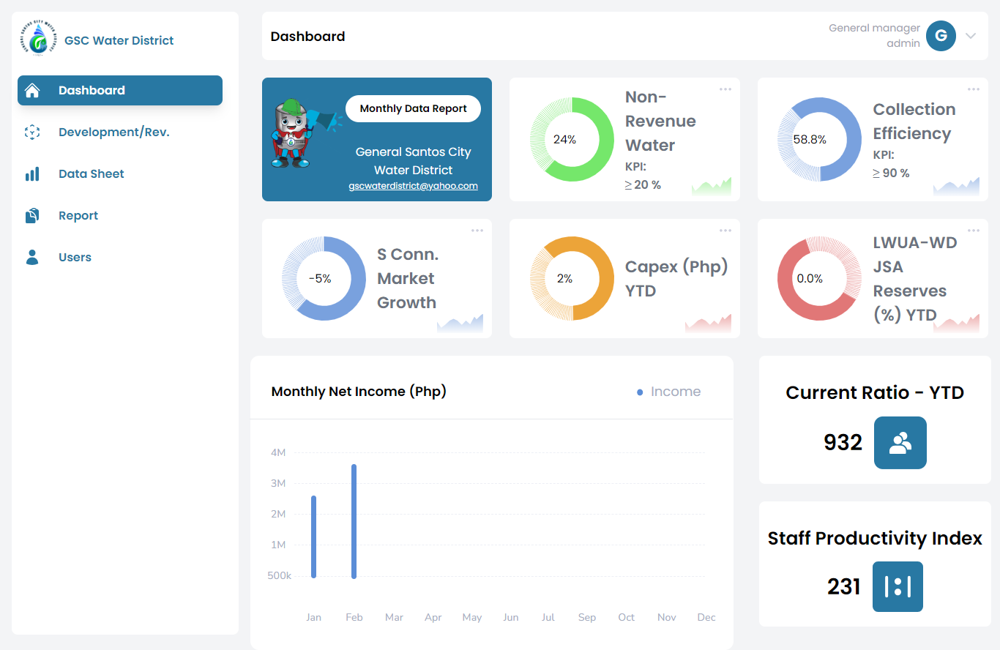
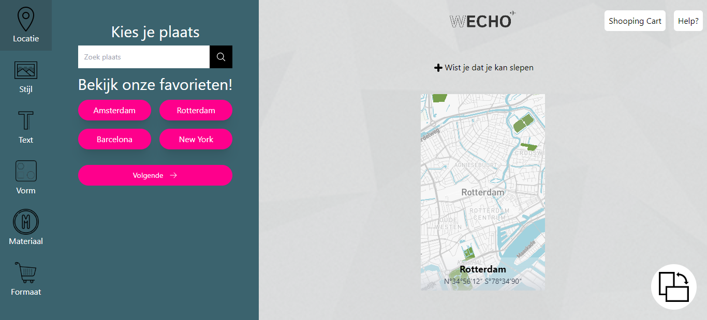
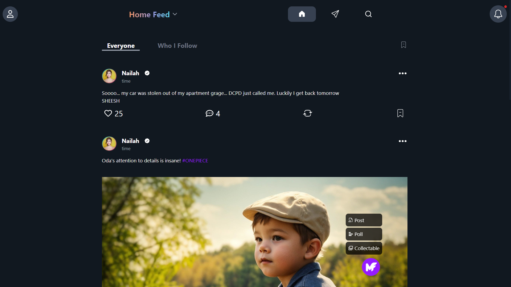
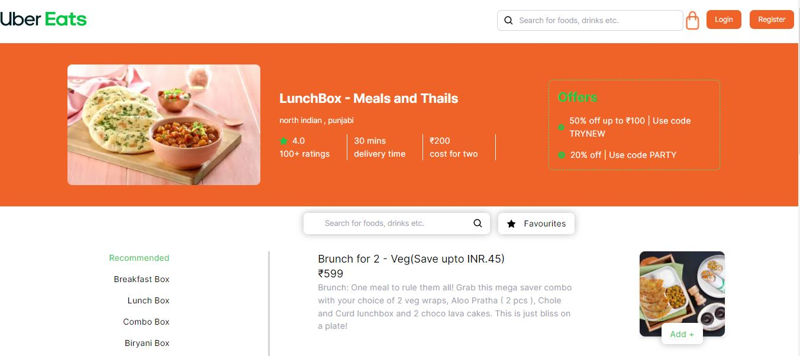
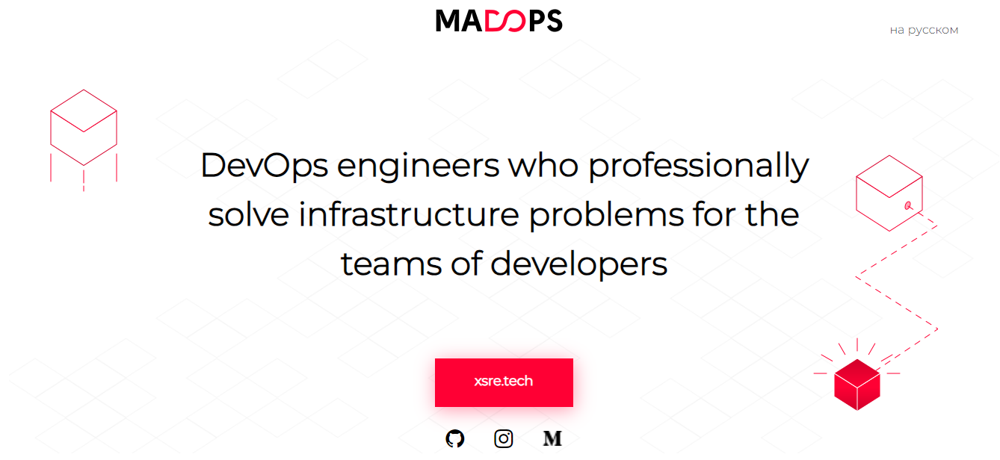
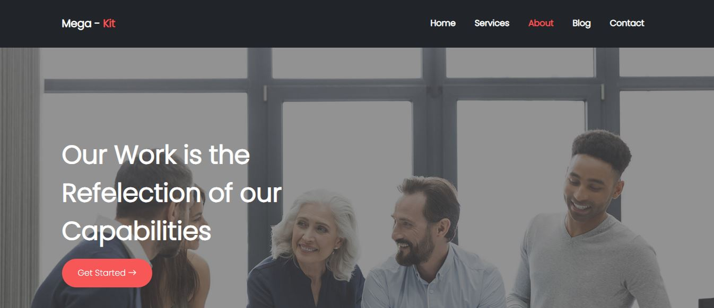
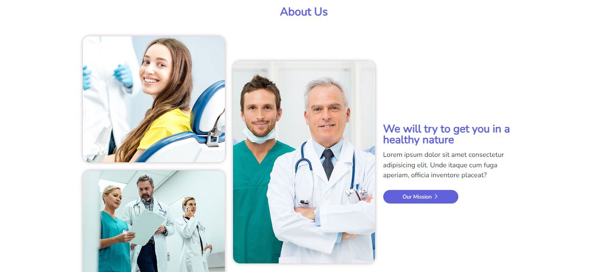

I build modern full-stack web applications using MongoDB, Express, React and Node.js.
Hi, I'm Ashfaq Ahmad, a MERN Stack developer passionate about building scalable and modern web applications.
I specialize in creating full-stack platforms using MongoDB, Express, React and Node.js with a focus on performance and clean architecture.

A modern dashboard for GSC Water District built with React and Tailwind CSS. It features real-time data visualization, user management, and responsive design.

A modern Full Stack Mapping tool built with React and Tailwind CSS. It features interactive maps real time update, order you map boards, and responsive design.

A modern social media platform built with React and Tailwind CSS. It features real-time data visualization, user management, and responsive design.

A modern Uber Eats clone built with Next Js and Tailwind CSS. It features are responsive design, user authentication, real-time order tracking and payment mehtod design.

A modern DevOps platform built with Next Js and Tailwind CSS.

A modern Business Kit built with Bootstrap. It features a responsive design.

Doctor's Step Landing Page built with Bootstrap.
I'm available for freelance projects, SaaS development, and full-stack web applications using the MERN stack. If you have an idea or project in mind, let's build something amazing together.
Hire Me